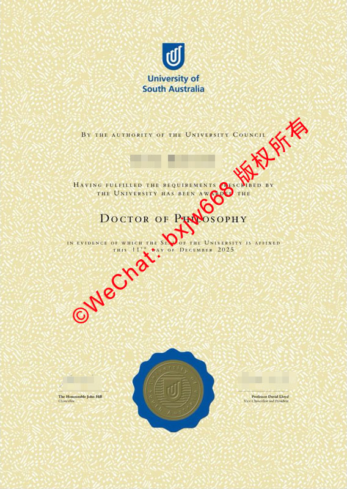

南澳大学毕业证样式模板（University of South Australia Diploma）核心防伪要素
在国际高等教育全球化与数字化背调日益严密的今天，一份海外名校的官方学位证书不仅是学子数年挑灯夜战的终极成果，更是其跨入国际高端职场、办理海外技术移民或回国进入核心体制内岗位的法定凭证。作为南澳大利亚州最大的公立综合性大学，南澳大学（University of South Australia，简称 UniSA）凭借其卓越的商科、工程、护理及创意产业专业在全球享有盛誉。

对于UniSA的毕业生以及教育行业背调机构而言，清晰掌握南澳大学毕业证样式模板（Diploma / Degree Certificate）的核心视觉要素与独家防伪机制，不仅关乎对学术尊严的敬畏，更是进行学历真实性核验的基石。本文将围绕南澳大学最高级别证书（以博士学位为例）的排版设计、核心物理防伪工艺、国际学术地位以及中国教育部的留服认证进行深度的原创剖析。
🔒 澳洲南澳大学毕业证书排版美学与三大独家防伪工艺解析
南澳大学的毕业证书在英联邦传统的庄重底蕴上，融入了极其现代化的视觉安全防伪技术。观察一张官方标准的UniSA毕业证范本，其核心防伪特征和视觉美学主要体现在以下三个维度：
1. 标志性的动态防伪碎纹底纸（Patterned Background）
与其他高校常用的纯白或单一羊皮纹证券纸不同，南澳大学采用了一种极高制作难度的全幅面动态不规则碎纹防伪底纸。 * 视觉特征：底纸呈现出淡黄色与米色交织的细密颗粒状网纹，宛如流动的星沙或天然麦穗纹理。 * 防伪功能：这种复杂的底纹设计能够完美对抗高分辨率彩色复印机和数字化扫描仪。普通复印件在放大后，这些细密的网纹会发生严重的断线、模糊或产生摩尔纹（Moiré pattern），极易被肉眼或设备识别。
2. 标志性的蓝色齿轮贴放校印（Blue Grained Seal）
证书中下方正中央，嵌有一个极具辨识度的深蓝色圆形齿轮状防伪校印。这是南澳大学文凭最核心的物理防伪构件：
* 核心结构：该校印采用高分子特种材料制成，外圈呈现精细的太阳芒或齿轮状放射条纹。
* 内部细节：印章内部中央凹刻有UniSA标志性的“U”型抽象几何校徽，外环则围绕着 UNIVERSITY OF SOUTH AUSTRALIA 的官方全称字样。整个校印具有极强的凹凸触感与立体反光效果，是文凭真伪鉴定的关键指标。
3. 官方授权文本与最高长官双重手写签字
证书正文采用现代无衬线字体与古典字体的优雅组合，由大学董事会（University Council）权威授权：
“BY THE AUTHORITY OF THE UNIVERSITY COUNCIL ... HAVING FULFILLED THE REQUIREMENTS PRESCRIBED BY THE UNIVERSITY HAS BEEN AWARDED THE THE DEGREE OF DOCTOR OF PHILOSOPHY”
（以博士证书为例，文本正中央的学位名称采用放大、加粗的罗马体书写，彰显学术最高荣誉的威严。）
在蓝色校印的左右两侧，错落有致地排布着两位置校最高长官的官方手写签字线：
* 左侧：Chancellor（校监）的签名与官衔。
* 右侧：Vice-Chancellor and President（校长兼CEO）的签名与官衔。
* 落款日期：采用英联邦传统的英文大写手写体拼写（例如 THIS 11TH DAY OF DECEMBER 2025），字迹清晰且与文本融为一体。
🏆 UniSA文凭的国际学术地位与全球就业市场竞争力
一份毕业证书的社会公信力与含金量，终究建立在母校强大的国际科研实力与学科声誉之上。南澳大学在国际高等教育版图上拥有极高的含金量。
国际主流世界排名稳步跃升
| 排名机构 | 国际梯队排名 | 核心优势与特色 |
|---|---|---|
| QS世界大学排名 | 稳居全球 前250-300强 | 商学院斩获 EQUIS 全球精英认证 |
| 泰晤士高等教育 (THE) | 全球年轻大学排名前50强 | 卓越的研究成果转化率与产业协同力 |
| 全澳年轻大学排名 | 稳居全澳 前5强 | 极具创新基因与年轻活力的现代化公立学府 |
顶尖优势学科的国际通行度
持有南澳大学毕业证的学子，在全球各行各业都享有极高的人才豁免权与专业认可： * 商科与管理（Business & Management）：UniSA商学院是全球仅有1%能够同时获得欧洲质量发展认证体系（EQUIS）认证的顶尖商学院，其文凭在华尔街及亚太金融中心具备极高的敲门砖属性。 * 工程与科技（Engineering & IT）：学校与国际工业巨头（如国防、航空航天企业）保持极深的产学研合作，工程类毕业生直接受到相关国际协议保护，具备全球执业资格。
🚀 中国教育部留服中心（CSCSE）合规认证与国内职场对接口
对于选择回国发展的中国留学生而言，南澳大学的学位证书拥有无缝对接国内用人体系的绝对优势。
- 教育局正规白名单院校： 南澳大学作为澳大利亚联邦政府正式注册、受中澳两国政府共同承认的公立大学，长期位列中国教育部涉外监管信息网推荐名单之首。
- 留服认证百分之百通过率： 回国后，毕业生只需将官方颁发的纸质毕业证原件扫描件、官方完整成绩单、护照及签证记录在线递交至中国教育部留学服务中心（CSCSE），即可在规定工作日内顺利取得《国外学历学位认证书》。
- 体制内敲门砖与落户红利： 通过留服认证的UniSA文凭，不仅在国内报考国家公务员、进入大型央企国企、或者是进入高校与科研院所时能够享受正规学历评级，在上海、北京、深圳等一线城市的海外高水平大学留学回国人员人才引进落户政策中，也享有直接落户或快速积分的绿色通道待遇。
🔒 结语：如何妥善维护并在线核验您的学术资产
毕业证书是学子多年青春与财富投入换来的无价之宝。在日常保管、背调或者跨国投递中，请务必注意以下学术资产的安全防范：
- 避免物理磨损与塑封破坏：UniSA证书特有的蓝色齿轮校印属于高分子热敏复合材质，正面的动态防伪网纹对高温高湿极为敏感。切勿对证书原件进行高温塑封，以免造成印章熔化或底纸变色，建议使用专用的无酸保护套进行存放。
- 启用 MyEquals 官方数字证书核验：南澳大学现已全面对接 MyEquals 国际数字文凭认证网络。毕业生可直接在线生成带有官方加密防伪签名的数字化PDF证书证书。该电子证书具有与纸质原件同等的法律效力，用人单位只需点击链接即可秒级完成防伪核验，彻底杜绝任何伪造风险。
南澳大学的毕业证书，不仅是一张融合了顶尖防伪印刷工艺的精美证券，它更代表着英联邦高标准学术训练的沉淀，以及走向全球科技与商业前沿的国际通行证。